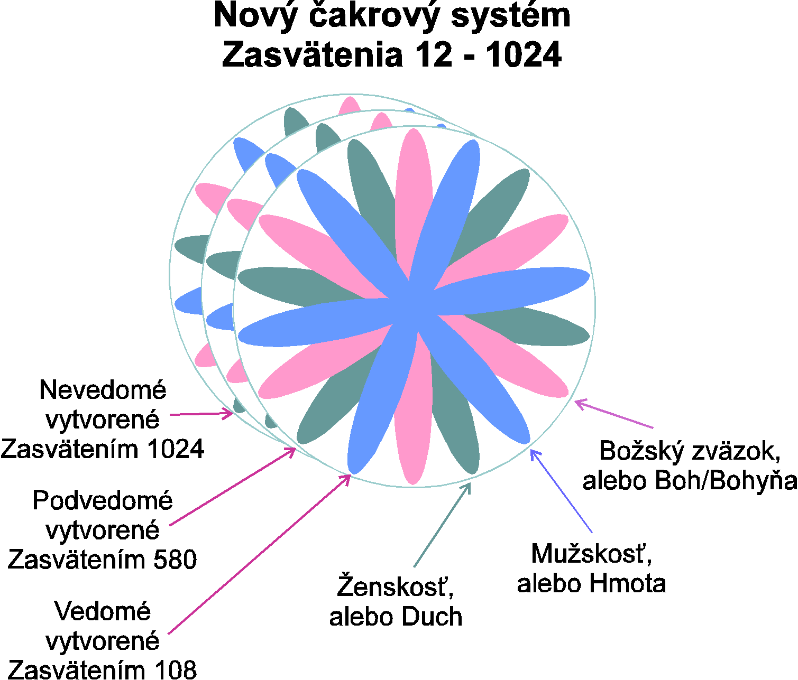
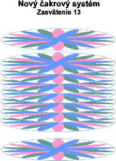
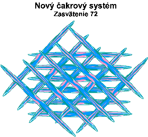
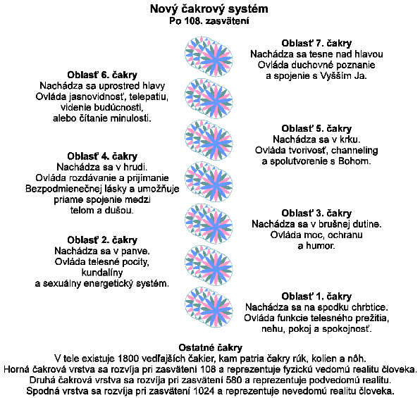

Kozmická hierarchia cez Karen Danrich
12.12.1997
My, Kozmická hierarchia by sme radi trochu osvetlili nasledovnú vlnu zasvätení, do ktorých sa mnohí z vás budú pú¹»a» v roku 1988 a nesèíselné mno¾stvá ïal¹ích ich podstúpia v nasledujúcich desa»roèiach. Mnohí z metafyzickej komunity priná¹ajú informácie o genetických a buneèných zmenách stojacich pred µudstvom, ale o aké zmeny presne ide? Na¹im ¾elaním je ís» hlb¹ie a osvetli» tento problém tým, ktorí podstúpia tento transformaèný proces v blízkej budúcnosti.
Po takmer 10 000 rokov boli spoloèenstvá delfínov a veµrýb jedinými "Najvy¹¹ími správcami vibrácií" na Zemi. Najvy¹¹í správca vibrácií je bytos», ktorá sa podieµa na udr¾iavaní frekvencie Zeme spolu s tými duchmi, alebo du¹ami, ktoré sú na na¹ej planéte. Pre tých, ktorí to nevedia, delfíny a veµryby sú plne vedomé bytosti, ktoré nevedia èo je to oddelenie od Boha, dorozumievajú sa telepaticky, komunikujú s Majstrami Duchovnej hierarchie a ¾ijú v stave bla¾enosti. Vo svojej radosti si udr¾iavajú vysokú vibráciu a tým, ¾e to robia podporujú Matku Zem, aby si udr¾ala svoju vibráciu.
Delfíny a veµryby boli pôvodne urèené, aby udr¾iavali vibráciu " Bezpodmieneèného uznania" v bytostiach, ktoré ¾ijú vo vode. Planéta Zem nie je jedinou planétou s rozsiahlymi vodnými plochami a genetický systém delfínov a veµrýb pochádza z hviezdneho systému Síria, kde im podobné bytosti pomáhajú udr¾a» frekvenciu Síria. ¥udstvo bolo tie¾ pôvodne urèené udr¾iava» vibráciu bezpodmieneènej lásky a podobne ako spoloèenstvá delfínov a veµrýb, podporova» vibráciu Zeme na sú¹i. S "Pádom èloveka" sa genetika µudstva tak zdeformovala, ¾e sa stratila vibrácia bezpodmieneèného súhlasu a spolu s tým sa stratila aj na¹a schopnos» by» najvy¹¹ím správcom vibrácií.
V na¹om poslednom èlánku "Nadobudnutie stavu Krista" sme sa podrobne venovali energetickým zmenám, ktoré súvisia so stelesnením vibrácie "Bezpodmieneènej lásky". Vibráciou bezpodmieneènej lásky je Ôsmy lúè a má karmínovú, alebo ru¾ovú farby. Pred "Pádom èloveka" µudstvo vibrovalo v Ôsmom lúèi, alebo vy¹¹ie. Pri páde, ktorý bol podµa Univerzálnych záznamov dôsledkom atómovej katastrofy stokrát väè¹ej ne¾ v Hiro¹ime, vibrácia µudstva klesla z Ôsmeho, alebo vy¹¹ieho lúèa do polámaných podvibrácií lúèov 1 a¾ 7. Atómová energia navy¹e zmenila genetiku posledných 10 000 rokov µudských dejín z dvanástich, alebo viacerých re»azcov DNA, na obvyklé dva re»azce. Pri dosiahnutí stavu "Krista" (známeho tie¾ ako proces Kozmického vzostupu), je v¾dy trochu pozdvihnutá vibrácia stelesnenia tak, ¾e lúèe 1 a¾ 7 sa vnútorne zjednotia, èo umo¾ní stelesneniu rezonova» v Ôsmom lúèi bezpodmieneènej lásky. Pri tom je stelesnených ïal¹ích desa» re»azcov DNA.
Týchto ïal¹ích desa» re»azcov DNA pochádza z civilizácie Síria. Hviezda Sírius obsahuje humanoidnú formu v piatej dimenzii. V poslednom desa»roèí sa vyskytlo veµa pokusov pomie¹a» genetický materiál z mno¾stva plne vedomých rás s µudskou formou. Väè¹ina iného genetického materiálu neuspela; av¹ak uspela genetika Síria, ktorá je na¹ej genetike najbli¾¹ia.
Sta» sa "Pokrsteným" (alebo stelesni» Ôsmy lúè bezpodmieneènej lásky) je iba prvým krokom k "Najvy¹¹iemu strá¾covi vibrácií" Zeme. Pri nadobudnutí stavu " Krista" zaèína stelesnenie dr¾a» Ôsmy lúè a zaèína podporova» vibráciu Matky zeme. Spoloèenstvo delfínov a veµrýb udr¾iava e¹te vy¹¹iu vibráciu. Spoloèenstvá delfínov a veµrýb zjednotili v svojom stelesnení celkovo osemnás» lúèov a stelesòujú stav "Bezpodmieneèného uznania".
Na to, aby bolo µudské stelesnenie pozdvihnuté z vibrácie Bezpodmieneènej lásky (alebo Ôsmeho lúèa) k vibrácii Bezpodmieneèného uznania, stelesòujúc tak 18 lúèov, je nutných ïal¹ích 36 re»azcov DNA, tak¾e celkovo je stelesnených 48 re»azcov DNA. Táto informácia o DNA je taktie¾ odvodená z civilizácie Síria a doposiaµ bola úspe¹ne zmie¹aná s µudskou formou v 200 prípadoch. Ná¹ kanál je chodiacim príkladom zmie¹ania DNA zo Síria a µudskej DNA.
Zmie¹anie DNA zo Síria s µudskou formou nesie so sebou úplnú buneènú prestavbu celého stelesnenia. Táto buneèná prestavba sa nazýva nadobudnutie "kry¹talickej" formy. Ná¹ kanál má obmedzené lekárske znalosti, ale my sa pokúsime poskytnú» prehµad toho ako sa "kry¹talická" forma lí¹i od va¹ej teraj¹ej µudskej buneènej ¹truktúry. Vedecká a lekárska komunita budúcnosti v nasledujúcich rokoch tieto zmeny podrobne zdokumentuje.
Kry¹talická bunka má buneènú stenu, ktorá je vytvorená z lipidnej pasty, t.j. telesného tuku. Telesný tuk udr¾iava vy¹¹iu vibráciu. Mnohí channelujúci a lieèitelia sa divia preèo sa zvý¹i ich hmotnos» keï vykonávajú lieèiteµskú dráhu. Je to prosto preto, ¾e telesný tuk je potrebný na udr¾iavanie vibrácií nutných k channelingu, alebo lieèeniu. Mnohí z vás takisto súhlasili s ukotvovaním mrie¾ok svetla v oblastiach kde ¾ijete. Ukotvenie týchto mrie¾ok si ¾iada, aby telesný tuk udr¾iaval energiu. ¥udská civilizácia je zamilovaná do stavu by» "chudý" a myslí si, ¾e "by» chudý znamená by» zdravý". Radi by sme umo¾mili na¹im èitateµom získa» novú perspektívu. Telesný tuk slú¾i láskyplnému úèelu, keï¾e stelesneniam umo¾òuje pomáha» Matke zemi v udr¾iavaní jej vibrácie.
Pri nadobudnutí kry¹talickej formy je telesný tuk rovnomerne rozlo¾ený okolo ka¾dej bunky v stelesnení. To umo¾òuje celému telu pôsobi» ako ladièka na udr¾anie novej vibrácie. To robí tie¾ zbytoènými dodatoèné vrstvy tuku, ktoré sa nachádzajú pod ko¾ou. Po dovà¹ení svojej kry¹talickej premeny zistil ná¹ kanál, ¾e na zachovanie vibrácie jej staèia tri percentá telesného tuku rozptýleného pod ko¾ou.
Kry¹talická bunka je priepustná a umo¾òuje µah¹iu medzibuneènú komunikáciu. V súèasnej µudskej forme je komunikácia medzi bunkami zabezpeèená prostredníctvom "osmózy" (osmóza = mie¹anie, alebo prelievanie kvapalín, alebo plynov) a molekuly prechádzajú pomedzi molekuly buneènej steny do samotnej bunky. V kry¹talickej bunke sa buneèné steny mô¾u rozpusti» a prestava» podµa potreby. V dejinách pôvodných obyvateµov Ameriky sa vraví o medicinmanoch a medicinmankách, ktorí boli obdarení schopnos»ou zmeni» svoju podobu, alebo sa transfigurova». Kry¹talická forma dovoµuje, aby sa v µudskom ¾ivote stali mo¾nými také dary ako je transfigurácia a zmena podoby. Kry¹talická buneèná ¹truktúra tie¾ umo¾òuje celému µudskému organizmu pôsobi» skôr ako celistvá zjednotená ¹truktúra ne¾ ako mnohobuneèný organizmus. Zjednotená ¹truktúra je nutnou podmienkou pre transfiguráciu, interdimenzionálne cestovanie, alebo teleportáciu z jedného miesta na iné miesto na povrchu zemegule.
Kry¹talická bunka nezomiera, ale sa skôr sama regeneruje. Vo va¹om súèasnom tele, sa bunky sústavne nahradzujú. Sústavné zomieranie buniek zaná¹a artérie a èrevný trakt, èo vedie k tvrdnutiu artérií, chorobám a smrti. Kry¹talická forma vedie ku skúsenosti nesmrteµnosti a nekoneèného bytia.
Baktérie a vírusy majú v kry¹talickej ¹truktúre iný úèel. Ka¾dý vírus, alebo baktéria má konkrétnu úlohu na zdraví a pohode kry¹talickej formy. Ná¹ kanál za¾il poèas procesu svojej konverzie prepuknutie mno¾stva vírusov, ktoré vypukli v podobe koprivky, zápalu priedu¹iek, hnaèky a prechodného znovuobjavenia sa istého problému s imunitou, ktorý kedysi pre¾ila. Vírusy sa zvyknú skrýva» v telesných bunkách. V prípade ná¹ho kanála sa v¹etky vírusy znovu objavili preto, aby boli prevedené k novému úèelu, èi dvojníkovi. Ná¹ kanál sa napríklad nauèil, ¾e vírus herpesu v jej tele získal dvojníka za úèelom medzibuneènej komunikácie v kry¹talickej ¹truktúre. O túto informáciu sa delíme s tými, ktorí mô¾u pochopi», ¾e nepohoda poèas procesu konverzie je len doèasná a ¾e vedie k bytiu bez chorôb.
Nakoniec, nervový systém v kry¹talickej forme funguje na melatonín. Na¹e súèasné µudské telo vyu¾íva epinefrin a norepinefrin na chemický prenos informácií v nervovom systéme. Epinefrin a norepinefrin vyvolávajú pocit strachu. Kry¹talický nervový systém nie je schopný pre¾íva» pocit strachu. V prípade ná¹ho kanála to viedlo k pocitu pokoja a mieru aký predtým nikdy v svojom ¾ivote neza¾ila.
Egyptské pyramídy boli v minulosti vyu¾ívané duchovnými zasvätencami na postupné zvy¹ovanie vibrácií µudského tela, za úèelom prestúpenia smrti. Poèas tohoto procesu sa stelesnenie premenilo na " kry¹talické". Bolo na to potrebných dvadsa», alebo aj viac rokov. S dostupnos»ou energie fotónového pásu v sektore Vesmíru, ktorým slneèný systém Zeme prechádza, je dnes mo¾né aby ktokoµvek kto je oddaný duchovnej ceste, podstúpil proces nadobudnutia kry¹talickej formy v priebehu jedného roka. Èlovek musí predov¹etkým nadobudnú» stav "Krista", alebo zavà¹i» svoj Kozmický vzostup. Nehodláme opakova» èo bolo napísané v na¹om predchádzajúcom èlánku, ale odporúèame aby si zasvätenci vyhµadali tieto informácie, ak tak u¾ nespravili. Potom sa musí dotyèný vnútorne zaviaza» prija» ïal¹iu vlnu zasvätení a po¾iada» o kry¹talickú konverziu v modlitbe, alebo meditácii.
Informácie, ktoré súvisia s kry¹talickou premenou nie sú nové. Sú to starobylé informácie, ktoré boli ukryté v "Hale záznamov" Veµkej pyramídy v Egypte pred asi 11 000 rokmi. V júli 1997 dvanás» jednotlivcov, ktorí spolu s na¹ím kanálom boli du¹ami zainteresovanými na uzamknutí haly záznamov v predchádzajúcich inkarnáciách v Egypte, sa znovu zi¹li pri znovuotvorení záznamov a preniesli informácie do Záznamov aka¹e Zeme. Záznamy aka¹e Zeme sú energetickou kni¾nicou Zeme a jej operaèným systémom. V júli 1997 bola pripravená prvá vlna 200 zasvätencov pusti» sa do týchto nových zasvätení a tieto informácie boli potrebné kvôli uµahèeniu ich vývoja.
¥udstvo nie je jediným stvorením na Zemi, ktoré sa podrobí transformácii na kry¹talickú formu. ®ivoèí¹na, rastlinná a minerálna rí¹a sa tie¾ majú vyvinú» do tejto novej formy. To umo¾ní, aby sa vyplnila predpoveï, ¾e "Lev a baránok budú le¾a» vedµa seba". Kry¹talická forma si nevy¾aduje jes» jedlo pre udr¾anie sa pri ¾ivote. ®ivoèí¹na rí¹a, aj µudstvo, bude jedného dòa v¹etku ¾ivotnú silu nutnú pre ¾ivot získava» dýchaním. Nedôjde k tomu v bezprostrednej budúcnosti, ale je to súèas» osudu Zeme. Predpokladá sa, ¾e sa to uskutoèní do roku 2 500.
V µudskom tele sa v súèasnosti nachádzajú dva re»azce z kry¹talickej genetiky, ktorých úlohou je pôsobi» ako katalyzátor pri duchovnom vývoji zasvätenca. Jeden re»azec je urèený hlavne pre lieèiteµov, kanály a uèiteµov, ktorí potrebujú, aby ich stelesnením prechádzali vysoké vibrácie a aby udr¾iavali energiu pre veµkú skupinu µudí. V prípade ná¹ho kanála spôsobil tento re»azec, po zmie¹aní novej genetiky s jej telom, rast tela. Narástla o 12 a¾ 13 cm, zväè¹ili sa jej kosti, narástli jej chodidlá a hrudný kô¹ sa jej zväè¹il o jednu tretinu. Zväè¹enie hrudného ko¹a je nevyhnutné kvôli zväè¹enej bránici, ktorá jej dovoµuje zvý¹i» kapacitu pµúc o 300 percent. Ná¹ kanál má skúsenos», ¾e udr¾anie energie pre auditórium µudí, si vy¾aduje veµa "Chi", alebo ¾ivotnej sily. Keï poriada workshop, spáli 2 500 a¾ 3 000 kalórií za hodinu len kvôli udr¾aniu vibrácií v miestnosti. Takéto mno¾stvo kalórií by nebolo mo¾né získa» jedlom a tak jej zvý¹ená kapacita pµúc umo¾òuje pritiahnu» " Chi" dýchaním.
Druhý re»azec nespôsobuje ¾iadne zmeny telesných rozmerov, av¹ak zasvätencovi umo¾òuje nadobudnú» bez námahy nové informácie. Tento re»azec umo¾ní zasvätencom vy¹¹ej úrovne privies» nové informácie zahaµujúce techniku zajtraj¹ka. Táto technika zrealizuje v¹etky nástroje nutné pre lieèbu na¹ich tiel a na¹ej planéty. Obdr¾aný genetický re»azec bude závisie» na du¹evnom úèele a teraj¹ích genetických predpokladoch a vlohách súèasného zasvätencovho stelesnenia.
Predpokladá sa, ¾e 75 percent zasvätencov z radov ¾ien obdr¾í prvý genetický re»azec, ktorý spôsobí zväè¹enie kostí a 75 percent zasvätencov z radov mu¾ov získa druhý re»azec. Pôvodné modely mu¾ského a ¾enského tela mali rovnakú veµkos» a hmotnos». Men¹ie rozmery ¾enského tela sú výsledkom skreslenia pôvodného modelu a je odrazom nedostatku ocenenia ¾enskej energie. Keï sa tieto nové genetické re»azce spoja s µudským telom, spôsobia vyrovnanie rozmerov tiel, sily a schopností medzi mu¾ským a ¾enským pohlavím.
Mu¾ské a ¾enské telá boli v pôvodnom modeli navrhnuté s polaritou vlôh. Boli tie¾ navrhnuté tak, ¾e sa mu¾i a ¾eny museli nauèi» spolupracova» a deli» sa o svoje vlohy. ®eny boli geneticky predurèené by» jasnovidcami a - keï¾e vidia budúcnos» - sú majstrami v riadení tvorenia. ®enské telo bolo taktie¾ predurèené udr¾iava» vy¹¹iu vibráciu, èo je dôvod preèo sa ¾eny tak dobre hodia na lieèenie a channeling. Mu¾ské telo bolo predurèené by» nadaným v krat¹om pohµade do budúcnosti. To spôsobuje, ¾e mu¾ské telo si dá rady s detailami a budovaním reality. Preto sú mu¾i èasto veµmi nadaní vo výskume nových informácií a kon¹truovaní novej techniky. Neplatí to absolútne, ale v ka¾dom prípade sú mu¾i a ¾eny predurèení by» odli¹ní a spája» svoje rozdiely vo fungujúcej spolupráci vlôh.
Dobrý príklad toho ako je mo¾né spoji» vlohy pri spolupráci, sa dá vidie» v hviezdnom systéme Síria. Na Síriu sú ¾enskí aj mu¾skí jasnovidci, ktorí sa nauèili spolupracova». ®ena - jasnovidec, vidí dlhodobý obraz budúcnosti a mu¾ - jasnovidec, vidí krátkodobej¹iu víziu krokov nevyhnutných pre vytvorenie tejto budúcnosti. Títo dvaja sa nauèili pracova» ruka v ruke, aby uskutoènili akýkoµvek projekt, ktorého sa zúèastòujú.
Súèasné nepríjemnosti na na¹ej planéte sú výsledkom podhodnocovania jasnovidných vlôh ¾enstva a nadhodnocovania mu¾ských rysov organizmu. Na¹e vedenie doslova otravuje na¹u planétu neèistotami, kvôli nedostatku pochopenia toho ako ovplyvní zajtraj¹ok to èo robia dnes. Podhodnotenie ¾enských energií viedlo na planéte k chudobe a hladu. Lebo podhodnotením istých èastí obyvateµstva na¹a spoloènos» ospravedlòuje hladovanie, preto¾e niektorí jednotlivci sú menej hodnotní. Naopak, nadhodnotenie mu¾ských energií viedlo k nenásytnosti. Lebo nadhodnocovaním inej èasti obyvateµstva ospravedlòujeme hromadenie bohatstva, preto¾e niektorí jednotlivci sú hodnotnej¹í.
Na¹e súèasné spoloèenské problémy zaniknú keï µudstvo stelesnení novú genetiku a pôvodný model pre ¾enské a mu¾ské telo. Nová genetika zavedie rovnováhu medzi vnútornou mu¾skos»ou a ¾enskos»ou, èo privodí pochopenie, ¾e v¹etci µudia na Zemi majú cenu. Èasom to zavedie rovnováhu do rozdeµovania zdrojov na celej planéte. Nakoniec, vojna medzi národmi je odrazom antagonizmu vo vz»ahoch medzi mu¾mi a ¾enami. Keï sa mu¾i a ¾eny nauèia ¾i» vo vzájomnej harmónii a navzájom dopåòa» svoje schopnosti, tak rovnako uèinia aj národy ná¹ho sveta.
Èo nás privádza k jadru problému µudskej genetiky. V¹etky problémy na Zemi sú dôsledkom skreslenia na¹ej genetiky. Nemá zmysel odsudzova» du¹e v µudskom tele, preto¾e vïaka obmedzenej genetike sú schopné chova» sa k sebe navzájom v obmedzených mo¾nostiach, bez ohµadu na to aký vynikajúci Majster sa mô¾e skrýva» za danou inkarnáciou. Keï sa odstráni genetické obmedzenie, µudský ¾ivot sa vráti do stavu, v ktorom mal v¾dy by», to jest do mieru, radosti, láske a ¹tedrosti ku v¹etkým.
Proces stávania sa "Najvy¹¹ím strá¾com vibrácií" a stelesnenie kry¹talickej formy má mnoho krokov. Spolu s prestavbou buniek sa zmení aj energetické pole stelesnenia. Nasleduje podrobný popis týchto zmien. Èísla zasvätení zodpovedajú poètu stelesnených re»azcov DNA. Tieto èísla zasvätení sa mo¾no nezhodujú so ¾iadnym iným materiálom napísaným na túto tému. Pochopte prosím, ¾e informácie nevyhnutné k nadobudnutiu kry¹talického stavu na zemi boli 11 000 rokov pod zámkom. Dokonca i tí, ktorí si mohli spomenú» na zasvätenia v pyramídach poèas minulých inkarnácií, nedokázali získa» prístup ku v¹etkým podrobnostiam. Dôvodom je to, ¾e informácie jednoducho neboli prístupné k nahliadnutiu.
Mnohí z vás sa mo¾no divia preèo boli tieto informácie dané pod zámok. Kòazi a kòa¾né zodpovedné za vedenie duchovného vývoja v pyramídach starobylého Egypta odhalili významný v¹eobecný problém, ktorý nedokázali napravi». Podµa Vesmírnych záznamov existuje " trhlina" medzi na¹ím trojdimenzionálnym vesmírom a susedným vesmírom v piatej dimenzii. Príèinou tejto "trhliny" je jedna z mnohých atómových vojen, ktorú viedli iné civilizácie v realite tretej a piatej dimenzie. "Trhlina" spôsobila nasatie susediacich bytostí z piatej dimenzie do na¹ej trojdimenzionálnej reality. ¥udia sú multidimenzionálni. Tieto bytosti (ktoré nezaplavili len Zem, ale v¹etky planéty tretej dimenzie) sa spojili s µudskými telami, èo spôsobilo veµa problémov. Tieto bytosti neboli urèené pre splynutie s µudským telom a zapríèinili pokles vibrácií µudského tela. Zapríèinili tie¾ to, ¾e µudia dostávali choroby, keï¾e ich splynutie vytvorilo energetické bloky, ktoré sa v ich telách predtým nevyskytovali. Výsledkom bolo to, ¾e zasvätenci, ktorí podstupovali závereèné zasvätenie v pyramídach zomreli, namiesto toho aby prestúpili smr» a vystúpili do piatej dimenzie.
Duchovné vedenie tej doby si uvedomilo, ¾e zasvätenia musia presta», pokým sa nenájde rie¹enie tohoto problému. Toto rie¹enie bolo nájdené a napravené v novej genetickej informácii vybranej zo sírianského tela, ktorá ak je vyu¾itá, zabraòuje teraz týmto bytostiam spája» sa s kry¹talickou formou tu na Zemi. Tieto bytosti, ktoré sa taktie¾ neboli schopné vyvíja» a ktoré boli vytrhnuté z ich prirodzeného prostredia, budú navrátené do svojho Vesmíru po oprave interdimenzionálnej trhliny v primeranej dobe vývoja v tretej dimenzii. Keï¾e Zem vzostupuje, opustia aj na¹u planétu. Na¹a vibrácia piatej dimenzie u¾ nebude pre ich prítomnos» vhodná.
Interdimenzionálna trhlina a bytosti, ktoré splynuli s µudským telom, spôsobili definitívny pád Atlantídy a "Pád Èloveka".Pád èloveka bol nevyhnutný a mal vyrie¹i» väè¹í v¹eobecný problém. Pokraèujúce vojny medzi galaxiami tretej a piatej dimenzie spôsobili vytvorenie stra¹idelného mno¾stva "èiernych dier". Ka¾dá èierna diera je znièená planéta, hviezda, alebo galaxia. Èierne diery, ako zistili vedci, sú invertovanými, alebo zrútenými energetickými systémami, ktoré v»ahujú do seba v¹etko èo sa k nim priblí¾i, vrátane svetla a ¾ivotnej sily. Èierne diery obsahujú 42 percent celkovej hmoty vesmíru tretej dimenzie. Ak hmotnos» èiernych dier prekroèí 50 percent hmotnosti celého vesmíru, mô¾e to ohrozi» vibráciu celého vesmíru, ¾enúc ho e¹te viac dolu, do hmoty tak, ¾e by u¾ nebolo mo¾né tento vývoj zvráti».
Melchizedekov rád, ktorý je strá¾com okultného poznania tohoto vesmíru rozhodol, ¾e de¹trukcia sa musí zastavi». Vývoj a de¹trukcia sú opaènými polaritami tej istej energetickej sily. Vývoj a de¹trukcia musia ma» rovnaké tempo, aby sa udr¾ala v rovnnováhe energia vesmíru. Ak sa zastaví vývoj, musí sa tak sta» aj s de¹trukciou. Pád èloveka bol uzákonený èlenmi Melchizedekovho rádu, aby sa zastavil vývoj, èím by sa zastavilo nièenie, pokým sa nenájde rie¹enie na vylieèenie celého vesmíru. Súèas»ou takéhoto rie¹enia sú súèasné genetické zmeny, ktoré sú teraz dostupné zasvätencom vo vy¹¹ích úrovniach na celej zemeguli.
Mnohí z vás, ktorí ste teraz inkarnovaní na planéte nesú v sebe veµkú vinu a hanbu, lebo veríte tomu, ¾e ste zapríèinili pád èloveka. Je to vïaka skutoènosti, ¾e sa stratil celý príbeh o tom preèo bol uzákonený pád. Pri teraj¹om pochopení vesmírneho úèelu, ktorému pád poslú¾il ¾iadame, aby tí z vás, ktorí si nesú vinu a hanbu, odpustili sebe samým, keï¾e ste v skutoènosti slú¾ili veµmi vysokému cieµu.
V ïal¹ej èasti tohoto èlánku je na¹ím úmyslom vysvetli» podrobnosti nadobudnutia stavu Najvy¹¹ieho strá¾cu vibrácií, prípadne ïal¹ích úrovní. Po nastúpení na cestu týchto zasvätení sa telo v krátkom èase zmení na kry¹talické. Nasledujúca postupnos» je postupnos»ou premeny, ktorú zakúsil ná¹ kanál. Ka¾dé stelesnenie je trochu odli¹né a preto ka¾dý zasvätenec mô¾e pre¾íva» trochu iný charakter premeny (konverzie). Po premene tela sa z neho uvoµnia urèité molekuly a toxíny, ktoré u¾ nie sú vhodné pre kry¹talickú formu (telo). Ná¹mu kanálu pomáhali bahenné a slané kúpele, pri odstraòovaní týchto toxínov ko¾ou, èo urýchµovalo proces jej vzostupu a pomáhalo zmieròova» jej telesnú boles».

Pri monitorovaní tých, ktorí sa podrobovali tomuto procesu premeny, pribli¾ne polovica z poèiatoèných 200 testovaných prípadov, poci»ovala telesnú boles» istej úrovne. Je dôle¾ité, aby zasvätenci pochopili, ¾e to je doèasný problém a ak je to potrebné, aby si pomáhali lieèivými rastlinami, masá¾ou, akupunktúrou, bahennými a slanými kúpeµmi. Radi by sme zdôraznili, ¾e va¹i praktickí lekári nemusia vôbec rozumie» procesu, ktorým v súèasnosti prechádzate.
Máme niekoµko zasvätencov, ktorí sa pokúsili nájs» pomoc u lekárskej obce, s dos» zaujímavými výsledkami. Jedna zasvätenkyòa nav¹tívila svojho lekára preto, aby jej urobil EKG mozgu, preto¾e trpela závratmi. Po tom èo znièila tri prístroje na EKG vy¹etrenie, bola poslaná domov bez testovania. Ïal¹ia zasvätenkyòa nav¹tívila lekára kvôli ultrazvukovému vy¹etreniu maternice. Aj ona spôsobila znièenie poèítaèa napojeného na ultrazvukový prístroj. Ïal¹ia zasvätenkyòa odi¹la do nemocnice s bole»ou v hrudi, mysliac si, ¾e má srdcový záchvat. Odobrali a vy¹etrovali jej krv, ale lekári niè nezistili a chceli ju vy¹etrova» ïalej. Ona v¹ak podpísala reverz a zavolala ná¹ kanál na výklad. Tieto príklady vám uvádzame preto, aby ste pochopili, ¾e tí z vás, ktorí sa pú¹»ajú do týchto zasvätení, sa pohybujú za hranicami súèasného vedeckého poznania µudského tela a odporúèame vám spolieha» sa na alternatívne zdroje zdravotnej pomoci.
ZASVÄTENIA 13 - 16:
PREKROÈENIE STRACHU

Pri zasväteniach 13 a¾ 16 sú transmutované v¹etky systémy viery zalo¾ené na strachu. Ka¾dé presvedèenie zalo¾ené na strachu je v podstate polarizované. Napríklad ak veríte tomu, ¾e v istých oblastiach ¾ivota ste lep¹í ako ostatní potom budete veri», ¾e v iných oblastiach ¾ivota ste hor¹í ako ostatní. Vyjasnia sa obe stránky ka¾dej viery a sú nahradené vierou, ktorá vedie ku strednej ceste t.j., ¾e ste "rovní ostatným". Presvedèenia zalo¾ené na strachu sú rôzne u ka¾dého genetického stelesnenia a preto sú jedineèné pre ka¾dú osobnú ¾ivotnú históriu zasvätenca.
Na konci 16. zasvätenia sa stelesnia segmenty du¹e zasvätenca rezonujúce s Ôsmym a Deviatym lúèom. Ka¾dý z týchto segmentov du¹e má karmu z mnohých ¾ivotov, ktorá sa musí vyèisti».
Lúè 9 - Lúè Cti má zlatú a striebornú farbu a zasvätencovi umo¾òuje cti» si v¹etko ¾ivé. Po stelesnení tejto vibrácie sa u zasvätenca rie¹ia otázky cti a hanby.
Lúè 10 - Lúè Nádeje má pastelovo modrú a zelenú farbu a zasvätencovi umo¾òuje prejavi» bo¾ský plán. Po stelesnení tohoto lúèa sa u zasvätenca rie¹ia otázky súvisiace s nedostatkom nádeje, alebo neschopnos» da» najavo svoj du¹evný úèel.
Po zostúpení segmentu du¹e Deviateho lúèa, vytvorí sa nový èakrový systém, ktorý obsahuje jedenás» nových èakier, alebo systém 22 èakier. Nové i staré èakry (ktoré majú zmenenú podobu), sa javia skôr ako veµké disky, alebo CD disky, ktoré sa tiahnu celou ¹írkou aurického poµa a naraz sa otáèajú proti smeru hodinových ruèièiek, podobne ako gramofón. Nový tvar èakry umo¾òuje ka¾dej èakre uchováva» oveµa viac informácií ne¾ predchádzajúce ku¾eµovité èakry.
Po zostúpení segmentu du¹e Desiateho lúèa sa zväè¹ia rozmery svetelného tela. V pôvodnom svetelnom tele (ktoré sa podobá dvom proti sebe obráteným pyramídam (tvar viï na www stránke http://www.floweroflife.org), sa spodná i horná èas» skladajú zo 4 stien a spolu je to osem stien. Zavà¹ením 16. zasvätenia sa zdvojnásobí poèet stien hornej i dolnej èasti, to znamená spolu 16 stien a ka¾dá èas» sa podobá drahokamu s ôsmimi stenami.
Zavà¹ením 16. zasvätenia sa stelesnia DNA re»azce 13 a¾ 16, èo má za následok premenu miechy, miechového moku a kostry na kry¹talickú formu. V prípade ná¹ho kanála to malo za následok znaènú boles» v samotnej chrbtici a svalové kàèe, kvôli nezhode vibrácií medzi chrbticou a svalmi. Zistila, ¾e na upokojovanie nervového systému a uvoµòovanie svalových kàèov jej pomáha Valeriána, Passiflora Incarnata (latinský názov) a ¥ubovník. Poèas procesu premeny jej pomáhal zachova» v rovnováhe endokrinný systém aj Vitex Agnus Castus (latinský názov).
ZASVÄTENIA 17 - 24:
PRESTÚPENIE OSOBNÝCH ARCHETYPOV
V tejto skupine zasvätení sú prestúpené archetypy osobnej úrovne. Archetypy sú polarizované, rovnako ako viera zalo¾ená na strachu. Archetypy sú tie vibrácie, ktoré siahajú od viery zalo¾enej na strachu, vyèistenej pri zasväteniach 13 - 16. Nasleduje zoznam niektorých archetypov, ktoré odhalil ná¹ kanál keï prechádzal touto èas»ou zasvätení:
Hrdina/Hrdinka |
Pán/Sluha |
Sudca/Odsúdený |
Milovaný/Neopätovaná láska |
Rodiè/Die»a |
Tuèný/Chudý |
Krásny/©karedý |
Uèiteµ/®iak |
Darca/Obdarovaný |
Vyu¾itý/U¾ívajúci |
Mudrc/Hlupák |
Dokonalá ¾ena/Dokonalý mu¾ |
Bohatstvo/Chudoba |
Priateµ/Nepriateµ |
Archetypy sú po transmutácii nahradené novým archetypom, ktorý rezonuje uprostred dvoch polarít. Poèas tohoto segmentu zasvätenia, ná¹ kanál zistil, ¾e láska, ktorú poci»uje voèi svojmu synovi nie je iná ako láska, ktorú cíti voèi jej milovanému, alebo svojim ¾iakom, uèiteµom, Majstrom, èi rodièom, ale je skôr rovnakým vyjadrením toho istého citu. Archetypy a nauèené lekcie budú jedineèné pre súkromný ¾ivot, minulý ¾ivot a skúsenos» du¹e ka¾dého zasvätenca.
Zostúpia segmenty du¹e, ktoré rezonujú v Lúèoch 11, 12 a usadia sa v stelesnení. Musí sa vyèisti» aj v¹etka karma súvisiaca s týmito segmentami du¹e.
Lúè 11 - Lúè Spojenia má zlatoru¾ovú farbu a umo¾òuje spojenie vnútornej mu¾skosti a ¾enskosti do stavu bo¾ského zväzku. Po stelesnení tohoto lúèa sa u zasvätenca rie¹ia otázky súvisiace s nerovnováhou medzi vnútornou mu¾skos»ou a ¾enskos»ou.
Lúè 12 - Lúè Transcendencie má pastelovo fialovú farbu a umo¾òuje zasvätencovi stelesni» moc transmutova» v¹etky obmedzenia. Po stelesnení tohoto lúèa sa u zasvätenca rie¹ia otázky súvisiace s obmedzením.
Po stelesnení jedenásteho lúèa sa mentálne, emocionálne a éterické telá zjednotia so svetelným telom. Emocionálne telo je ekvivalentné tomu èo zostalo z negatívneho ega, alebo vnútornej ¾enskosti zalo¾enej na strachu. Rozdrobenie emocionálneho tela vyústilo do pocitu osamelosti, ktorý u µudstva prevláda. Po zjednotení emocionálneho tela sa prestúpi tento pocit osamelosti. Mentálne telo je ekvivalentné tomu èo zostalo z ega, alebo z vnútornej mu¾skosti zalo¾enej na strachu. Rozdrobenie mentálneho tela vyústilo do potreby sú»a¾i» s ostatnými. Po zjednotení mentálneho tela sa prestúpi potreba sú»a¾i». Rozdrobené éterické telo je u µudstva príèinou strachu zo smrti. Po zjednotení éterického tela bude prestúpený strach zo smrti.
Stelesnením 12 lúèa sa roz¹íri svetelné telo tak, ¾e má 12 stien hore a 12 stien dole, èi¾e spolu 24 stien. Aurické pole zasvätenca 24. úrovne obsiahne Spojené ¹táty. Po dokonèení tohoto segmentu zasvätení sa svaly aj spojovacie väzivé zmenia na kry¹talické. A tak sa v zasvätencovom tele zapoja re»azce DNA 17 a¾ 24.
ZASVÄTENIA 25 - 36:
PRESTÚPENIE SKUPINOVÝCH ARCHETYPOV
Skupinovými archetypmi sú tie archetypy, ktoré ovládajú vz»ahy medzi dvomi, alebo viacerými µuïmi. Príkladmi skupinových archetypov sú archetypy pre man¾elstvo, rodinu, priateµstvo, milencov, nepriateµov, ¹kolu a prácu. Tieto archetypy (ktoré sú zalo¾ené na stave a na karme) sú vyjasnené, keï èlovek stelesní tento ïal¹í segment zasvätení a sú nahradené archetypmi súvisiacimi so skupinovými vz»ahmi zalo¾enými na bezpodmieneènej láske. V istom zmysle slova zasvätenec stelesòuje nový operaèný systém pre skupinové modely. Tieto archetypy budú pre ka¾dého zasvätenca iné, v závislosti na priebehu osobného ¾ivota, genetickej karmy a karmy zviazanej s du¹ou. Ná¹ kanál spozoroval, ¾e poèas týchto zasvätení vyplávali na povrch za úèelom spracovania v¹etky negatívne skúsenosti so skupinami, ktoré mala poèas jej ¾ivota.
Po dokonèení 36. zasvätenia sú stelesnené segmenty du¹e rezonujúce v Lúèoch 13, 14 a 15. S prijatím týchto segmentov du¹e musí by» vyèistená v¹etka karma, ktorá má s nimi súvis.
Lúè 13 - Lúè Harmónie má pastelovo tyrkysovú farbu a umo¾òuje èloveku ¾i» v súèasnej chvíli, bez zamestnávania sa tým èo bolo v minulosti, alebo èo bude v budúcnosti. Poèas stelesòovania 13. lúèa sa u zasvätenca rie¹ia otázky súvisiace s potrebou sníva» o budúcnosti, alebo spomínanie na minulos».
Lúè 14 - Lúè Realizácie má opálovo bielu farbu a umo¾òuje èloveku spolutvori» s Bohom bo¾ský plán. Poèas stelesòovania 14. lúèa sa rie¹ia problémy súvisiace s tým ako zasvätenec tvoril v závislosti na ostatných, alebo na skupinách a zbavuje sa týchto problémov.
Lúè 15 - Lúè Jasnosti má zlatobielu farbu a umo¾òuje èloveku jasne vidie» svoj du¹evný úèel a smerovanie. Poèas stelesòovania 15. lúèa sa prepú¹»ajú v¹etky predstavy, ktoré nie sú zlúèiteµné s du¹evným úèelom èloveka, alebo s Bo¾ským plánom.
Stelesnením Lúèov 13 a 14 zostúpi ïal¹ích 11 èakier. To znamená, ¾e celkový poèet èakier je 33. Tieto nové èakry sú rozlo¾ené rovnomerne od prvej a¾ po sto¹tyridsiatu ¹tvrtú dimenziu ná¹ho stvorenia. Stelesnením Lúèa 15 sa svetelné telo e¹te viac zväè¹í a má osemnás» stien na hornej èasti a osemnás» stien na spodnej èasti, t.j. celkovo 36 stien. Zavà¹ením 36. zasvätenia obsiahne aurické pole rozlohu Severnej ameriky. Poèas tejto èasti zasvätení sa ná¹mu kanálu premenila na kry¹talickú formu peèeò, oblièky, slezina a za¾ívací trakt. Poèas tohoto procesu sa v jej tele zapojili re»azce DNA 25 a¾ 36.
ZASVÄTENIA 37 - 48:
PRESTÚPENIE PLANETÁRNYCH ARCHETYPOV -
"NAJVY©©Í STRÁ®CA VIBRÁCIÍ"
Planetárnymi archetypmi sú archetypy ovládajúce celkové vedomie ná¹ho sveta. Planetárne archetypy mô¾eme rozdeli» na tri rôzne kategórie: archetypy ovládajúce oblas» v ktorej èlovek ¾ije, archetypy ovládajúce národ v ktorom sa èlovek narodil a archetypy, ktoré sa týkajú ka¾dého a v¹etkých národov na celej zemeguli. Niektoré z archetypov, ktoré ná¹ kanál vyjasnil zahàòali archetypy súvisiace so vzdelávaním, medicínou, IRS, bankovým systémom, armádou, nábo¾enstvom a médiami. Ka¾dý zasvätenec pre¾ije trochu odli¹nú variantu planetárnych archetypov a to vïaka svojej jedineènej genetickej a ¾ivotnej histórii. Keï sa dokonèí toto zasvätenie, zasvätenec v istom zmysle slova prijíma celkom nový operaèný systém pre civilizáciu na Zemi, zalo¾enú na bezpodmieneènej láske.
Stelesnením 48. zasvätenia sa vo vnútri tela zjednotia segmenty du¹e od 16. 17. a 18. lúèa. Musí sa vyèisti» aj v¹etka karma súvisiaca s týmito segmentami du¹e.
Lúè 16 - Lúè Jednoduchosti má pastelovo oran¾ovú farbu a umo¾òuje èloveku zjednodu¹i» vonkaj¹ok tak, ¾e jeho ¾ivot riadi vnútorná realita. Keï zasvätenec stelesní tento lúè, odstránia sa v¹etky skupinové, národné a planetárne vplyvy na riadenie zasvätenca. Vedie ho len jeho vnútorné vedenie.
Lúè 17 - Lúè Pravdy je strieborno biely a umo¾òuje èloveku spozna» svoju vlastnú pravdu a bezpodmieneène prija» v¹etky ostatné vyjadrenia pravdy. Stelesnením tohoto lúèa, zasvätenec dospieva k poznaniu, ¾e v¹etky vyjadrenia pravdy sú jedineèné a oprávnené, vrátane jeho vlastnej pravdy.
Lúè 18 - Lúè Bezpodmieneèného uznania má jasnobielu farbu a uskutoèòuje bezpodmieneèné uznanie seba samého a v¹etkých ostatných. Stelesnením 18. lúèa sa odstránia v¹etky planetárne vplyvy na du¹evný úèel zasvätenca a jeho smer. Zasvätenec bezpodmieneène prijíma svoju vlastnú cestu aj cesty ostatných.
Po stelesnení Lúèov 16 a 17, zostúpi jedenás» nových èakier, to znamená, ¾e celkový poèet èakier je 44. Tieto nové èakry sú rozlo¾ené rovnomerne od prvej a¾ po 360. dimenziu. Po stelsnení 18. lúèa sa svetelné telo roz¹íri na 24 stien v hornej èasti a 24 stien v spodnej èasti, to znamená celkovo 48 stien. Aurické pole zasvätenca 48. úrovne obsiahne oblas» Severnej aj Ju¾nej Ameriky. Pri dokonèení 48. zasvätenia sa v tele zapoja re»azce DNA 37 a¾ 48. Poèas tohoto procesu sa u ná¹ho kanálu premenil na kry¹talickú formu ¾alúdok, pa¾erák, pµúca, bránica a pankreas. Po dokonèení 48. zasvätenia zaèína by» dotyèný pova¾ovaný za Najvy¹¹ieho strá¾cu vibrácií planéty Zem.
ZASVÄTENIA 49 - 60:
PRESTÚPENIE SOLÁRNYCH ARCHETYPOV
Nasledujúca vlna zasvätení 49 - 72 dovedie èloveka v duchovnej evolúcii na úroveò zvedomenia, ktorá bola od dôb starobylého Egypta na Zemi veµmi zriedkavá. Títo jednotlivci sú na¹imi budúcimi duchovnými vodcami, ktorí prostredníctvom nadobudnutej vnútornej vyrovnanosti vydlá¾dia cestu pre zvy¹ok µudstva.
Solárnymi (slneènými) archetypmi sú tie archetypy, ktoré ovládajú ná¹ solárny systém a Astrológiu tak ako ju dnes poznáme. Astrologické vplyvy boli a sú zalo¾ené na dualite a polarite. Pri prechode do piatej dimenzie dostane v µudskom ¾ivote prednos» nový astrologický vplyv zalo¾ený na bezpodmieneènej láske. Keï zasvätenec dokonèí 60. zasvätenie, stelesní tieto nové astrologické vplyvy a starý systém, tak ako ho poznáme, sa u¾ viac nebude uplatòova». V istom zmysle slova zasvätenec stelesní celkom nový operaèný systém ná¹ho solárneho systému, zalo¾ený na bezpodmieneènej láske. Nové stelesnené planetárne vplyvy sú nasledovné:
Merkúr |
Vibrácia Bezpodmieneèných ideí |
Venu¹a |
Vibrácia Bezpodmieneènej lásky |
Zem |
Vibrácia Bezpodmieneènej vlády |
Mesiac |
Zosilòuje vibráciu planéty Zem |
Mars |
Vibrácia Bezpodmieneèného toku |
Neptún |
Vibrácia Bezpodmieneènej vízie |
Saturn |
Vibrácia Bezpodmieneènej spolupráce |
Jupiter |
Vibrácia Bezpodmieneènej ¹tedrosti |
Urán |
Vibrácia Bezpodmieneènej tvorivosti |
Pluto |
Vibrácia Bezpodmieneènej transcendencie |
Niburi |
Vibrácia Bezpodmieneèného uznania |
Slnko |
Vibrácia Bezpodmieneènej ¾ivotnej sily |
Jestvuje ïal¹ia planéta, ktorá má by» e¹te len pridaná do ná¹ho teraj¹ieho astrologického systému, ale je zaznamenaná v na¹ich súèasných modeloch solárnych archetypov. Ná¹ kanál nazval túto planétu Niburi. Niburi (ktorá v modeli pravidiel zalo¾ených na strachu ovláda celkové nevedomie) má dobu obehu okolo Slnka 3 600 rokov a je najvzdialenej¹ou planétou. Astrológovia zajtraj¹ka budú poèíta» s vplyvom tejto planéty na na¹e budúce ¾ivoty. Okrem Niburi existuje ïal¹í archetypický model pre ïal¹iu planétu, ktorá bola znièená pred zhruba tromi miliardami rokov a v súèasnosti sa nachádza v Mlieènej ceste. Jeden z najväè¹ích úlomkov z tejto planéty sa nazýva Chiron, ktorý má urèitý vplyv na súèasné astrologické interpretácie, ale v ¾iadnom prípade nie taký ako keby bola planéta neporu¹ená. Dokonèením 60. zasvätenia zasvätenec stelesòuje 19. lúè.
Lúè 19 - Lúè Bezpodmieneèného odpustenia má bledú ru¾ovobielu farbu a umo¾òuje zasvätencovi bezpodmieneène odpusti» ka¾dému a ka¾dej skúsenosti v svojej minulosti, alebo súèasnosti.
Stelesnením 19. lúèa zostúpi ïal¹ích 22 èakier. Tieto èakry spájajú ostatné èakry, ktoré sa tiahnu z tela, s tristo¹es»desiatou dimenziou na spôsob pyramídy. To je poèiatok èakrového modelu, ktorý napodobòuje model spoloèenstva delfínov a veµrýb. V stelesnení sa zapoja DNA re»azce 49 - 60. U ná¹ho kanála do¹lo k premene obehového systému, srdca, kostnej drene a ¾íl na kry¹talickú formu. Na konci 60. zasvätenia sa svetelné telo roz¹íri na tridsa» stien v hornej èasti a na tridsa» stien v dolnej èasti. Aurické pole zasvätenca ¹es»desiatej úrovne obsiahne jednu polovicu Matky Zeme.
ZASVÄTENIA 61 - 72:
PRESTÚPENIE VESMÍRNYCH ARCHETYPOV -
"OSVIETENIE"
Vesmírne archetypy sú archetypmi, z ktorých je vybudovaný ná¹ vesmír. Tieto archetypy sa delia na sedem hlavných kategórií, alebo zákonov, ktoré zahàòajú:

Prekroèenie tohoto segmentu zasvätení nazývajú Majstri "osvietenie". Po dokonèení 72. zasvätenia stelesòuje zasvätenec nový operaèný systém pre ná¹ Vesmír, zalo¾ený na bezpodmieneènej láske. Vesmír piatej dimenzie prestupuje polaritu a podmieòuje tak, ¾e stelesnenie modelu vesmíru zalo¾eného na bezpodmieneènej láske je nevyhnutným predpokladom pre presun do piatej dimenzie. Po prestúpení týchto siedmych vesmírnych archetypov zostúpi do tela èas» du¹e vibrujúca na úrovni Dvadsiateho lúèa.
Lúè 20 - Lúè Bezpodmieneèného prijatia je bledomodrej farby a ovláda bezpodmieneènú spravodlivos». Keï zasvätenec stelesní tento lúè, musia sa vyjasni» v¹etky skúsenosti súvisiace s nespravodlivos»ou voèi sebe samému, alebo iným.
Stelesnením 20. lúèa zostúpi do aurického poµa ïal¹ích 22 èakier a pyramidálne spoja èakry medzi koreòom chrbtice s prvou dimeziou. Nový èakrový systém teraz dokonale napodobòuje èakrový systém spoloèenstva delfínov a veµrýb. Aurické pole zasvätenca 72. úrovne obsiahne celú planétu. Poèas tohoto segmentu zasvätení sa v tele zapoja DNA re»azce 61 a¾ 72. U ná¹ho kanála to znamenalo premenu lymfatického systému, autonómneho nervového systému a mozgovej stopky na kry¹talickú formu.
ZASVÄTENIA 73 - 90:
PRIJATIE KOZMICKÝCH ARCHETYPOV
Táto nasledovná vlna zasvätení umo¾òuje zasvätencovi nadobudnú» stav úplného odpútania. Stav odpútania je urèený pre vedenie, ktoré bude ovplyvòova» celé µudstvo. Toto vedenie prestúpi hranice rasy, viery a nábo¾enstva za úèelom zjednotenia cieµa a riadenia u veµkých èastí populácie.
Kozmickými archetypmi sú archetypy, ktoré ovládajú kozmos. Na tejto úrovni zasvätenec stelesòuje zásady chodu kozmu spoèívajúce na bezpodmieneènej láske za úèelom pozemského vedenia. Keï zavätenec dokonèí toto zasvätenie, stelesní ïal¹ie dva segmenty du¹e, ktoré vibrujú vibráciou lúèov 21 a 22.
Lúè 21 - Lúè Bezpodmieneènej vlády je lúèom Duchovnej hierarchie. Lúè Bezpodmieneènej vlády je bledo¾ltej farby a súvisí s bezpodmieneènou láskou vo vedení veµkých skupín. Keï zasvätenec stelesní tento lúè, vyjasnia sa v¹etky predchádzajúce skúsenosti zakázaného vedenia v minulých ¾ivotoch, alebo v súèasnom ¾ivote.
Lúè 22 - Lúè Bezpodmieneènej harmónie je lúèom kozmickej hierarchie. Lúè bezpodmieneènej harmónie je bledej, fialovobielej farby a umo¾òuje èloveku vytvori» harmóniu vo veµkých skupinách. Keï zasvätenec stelesní tento lúè, vyjasnia v¹etky oblasti jeho súèasného, alebo minulého ¾ivota, ktoré viedli k stavu osobnej, alebo skupinovej disharmónie.
Stelesnením týchto dvoch lúèov zostúpi ïal¹ích 44 èakier a celé aurické pole sa zmení na ¹truktúru "Kvetu ®ivota". Týmto sa ka¾dá èakra spojí so v¹etkými ostatnými èakrami v pohyblivom osmièkovom energetickom modeli. Pravé a µavé strany v¹etkých èakier sú spojené, vytvárajúc horizontálny sled osmièiek udr¾ujúcich v rovnováhe vnútornú mu¾skos» a ¾enskos». Ka¾dé zo siedmich èakrových centier v tele ïalej obdr¾í vlastný, miniatúrny model kvetu ¾ivota. Je to poèiatoèný model odpútania. V¹etky energetické linky z aurického poµa zasvätenca, ktoré sú natiahnuté k inej osobe, miestu, alebo predmetu, sa odpoja a zapoja sa dovnútra. Týmto sa v stelesnení zapoja re»azce DNA 72 - 90. Zo skúseností ná¹ho kanála zmení sa na kry¹talické centrum mozgu.
ZASVÄTENIA 91 - 108:
NADOBUDNUTIE STAVU ODPÚTANIA
Zavà¹ením tohoto segmentu zasvätení sa zasvätenec dostáva do stavu úplného odpútania. Odpútaním je aurické pole, ktoré je pánom svojej vlastnej energie. V tomto stave sa zasvätenec dostáva mimo vplyv v¹etkého a ka¾dého okrem svojej vlastnej du¹e a vedúcich orgánov na¹ej Duchovnej a Kozmickej hierarchie. To umo¾òuje formu vedenia, ktorá zodpovedá cieµom Boha a Bo¾ského plánu. Poèas tohoto procesu zostupujú do aurického poµa segmenty du¹e z Lúèov 23, 24 a 25.
Lúè 23 - Lúè Bezpodmieneèného cieµa má jasnú opalizujúcu bielu farbu a je lúèom Mahatmu. Prijatím tohoto lúèa, zasvätenec prijíma vo svojom aurickom poli vibráciu Mahatmu.
Lúè 24 Lúè Bezpodmieneèného vedenia má jasnú striebornobielu farbu a je lúèom ná¹ho stvoriteµa v 144. dimenzii. Stelesnením 24. lúèa sa uvádza do súladu du¹evný úèel èloveka, stvoriteµov cieµ s jeho du¹ou a Bo¾ský plán.
Lúè 25 - Lúè Bezpodmieneènej transformácie má jasnú zlatobielu farbu a je lúèom Stvoriteµovho Stvoriteµa, známeho ako V¹adeprítomný Boh (The Omnipresent One). Prijatím tohoto lúèa sa dostáva do súladu smerovanie a úèel zasvätenca s bo¾ským plánom z vonku tohoto stvorenia. Tento lúè zasvätencovi umo¾òuje pomáha» Zemi a celému µudstvu v ich transformácii.
Stelesnením 23. lúèa zostúpi do stelesnenia ïal¹ích 44 èakier a v¹etky menej významné èakry sa prevedú do modelu Kvetu ¾ivota. Stelesnením 24. lúèa expanduje srdcová èakra a obsiahne kraj v ktorom zasvätenec ¾ije. Srdcová èakra ná¹ho kanála objíma celú oblas» San Francisco Bay. Nakoniec sa stelesnením 25. lúèa ukotví na zemeguli ïal¹í 23 modelov Kvetu ¾ivota s rovnakou ¹truktúrou. Niektorí to nazývajú stav avatára 24. bodu, alebo ten kto ukotvuje 24 bodov svetla. Zavà¹ením tohoto zasvätenia sa v stelesnení zapoja DNA re»azce 91 a¾ 108. Týmto sa µavá aj pravá mozgová hemisféra zmenia na kry¹talické. Toto je stav úplného odpútania. Ná¹ kanál je na pokraji zavà¹enia tejto série zasvätení.

TAK ÈO TO V©ETKO ZNAMENÁ?
Mnohí budú mo¾no zvedaví èi sa po 108. zasvätení objavia transcendentálne schopnosti. E¹te celkom nie. Vo vnútri pyramíd sa nachádza ¹peciálna komora na 100 000-násobné zosilnenie fotónovej energie. Táto komora bola naprojektovaná za úèelom prevedenia zasvätencov cez posledný krok, aby prestúpili smr». Taká úroveò energie, aká je v týchto komorách sa vyskytne na Zemi v tejto fáze dejín. Predpokladáme, ¾e bude trva» ¹es» mesiacov a¾ jeden rok, kým sa zvý¹i úroveò vibrácie na Zemi a fotónová energia dostatoène na to, aby pre¹la prvá vlna zasvätencov úplne do nasledujúcej dimenzie.
Matka Zem rýchlo mieri k svojmu vzostupu. Matka Zem pre¹la do ¹tvrtej dimenzie v máji 1997. A tak sa tempo vzostupu v uplynulých mesiacoch zdvojnásobilo. Musí by» pripravené nové vedenie na prebudenie µudstva. V nasledujúcich dvoch rokoch dokonèí ka¾dý mu¾, ¾ena a die»a na Zemi svoje 6. duchovné zasvätenie, nadobudnúc tak nejjednoduch¹iu formu "svetelného tela". Do konca roku 2002 ka¾dý mu¾, ¾ena a die»a na Zemi dokonèí svoje 8. duchovné zasvätenie a splynie Kauzálna rovina so Zemskou rovinou. Po roku 2002 dôjde k prudkej prestavbe civilizácie na Zemi. Zhroma¾dí sa nové vedenie (tí, ktorých úroveò vývoja a pochopenia vychádza z princípov bezpodmieneènej lásky), aby pomohlo pri prestavbe vá¹ho sveta.
Mnohí proroci minulosti písali o hrozných pohyboch zeme a pusto¹ení, ktoré nás èakajú v tomto období na¹ich dejín. Toto pusto¹enie zeme blokujú tí, ktorí stelesòujú tieto nové zasvätenia. Rozhoduje poèet zúèastnených. Ak ich bude príli¹ málo, vibraèné posuny nebudú ma» dostatoènú podporu, èo mô¾e vyústi» do pozemských katastrof. Príli¹ veµký poèet zúèastnených mô¾e uvrhnú» celý proces do ïal¹ieho extrému, s tým istým výsledkom. Od ka¾dého z nás sa ¾iada zohra» svoju úlohu v tomto procese. Mnohí sú zvedaví na neprebudené masy. Títo jednotlivci musia spa» pokým nepríde vhodný èas na prebudenie. Udr¾iava to vzostup zeme v rovnováhe a jej pohyb pod kontrolou.
Predpokladá sa, ¾e do konca roka 1997 dosiahne stav "Krista" 100 000 jednotlivcov. Predpokladá sa, ¾e do konca roka 1998 dosiahne ïal¹ích 200 000 µudí stav "Krista", 20 000 µudí dosiahne stav "Najvy¹¹ieho strá¾cu vibrácií", 10 000 stav "Osvietenia" a 5 000 dôjde k stavu "Odpútania".
Na to aby sa Zem aj µudstvo presunuli do piatej dimenzie a do stavu hviezdy, jedno percento populácie, t.j. ¹es»desiat miliónov µudí, bude musie» nadobudnú» stav "Krista". Z toho dvadsa» percent, t.j. dvanás» miliónov, nadobudne stav "Najvy¹¹ieho strá¾cu vibrácií", desa» percent, alebo ¹es» miliónov dosiahne stav "Osvietenia" a pä» percent, alebo tri milóny stelesnia stav "Odpútania". Tieto poèty µudí vytvoria vibraènú pyramídu, ktorá vyzdvihne celé µudstvo do piatej dimenzie. Predpokladá sa, ¾e by k tomu malo dôjs» niekedy pred rokom 2025.
Nie ka¾dé stelesnenie, ktoré sa pustí do tejto nasledujúcej vlny zasvätení je predurèené k tomu, aby ihneï dokonèilo celý proces. Je potrebných veµa vodcov na vytvorenie novej civilizácie na pomoc pri posune úrovne zvedomenia µudstva na Zemi. Vodca, ktorý je odpútaný nemô¾e vyhovova» celému µudstvu. Je potrebných veµa vodcov, na mnohých úrovniach, aby sa dotkli aj tých, ktorí sa práve prebúdzajú. To je cieµom v prípade tých, ktorí sa doèasne zastavia na istej úrovni zasvätení. Bude vaµa takých, ktorí sa zastavia po 12. zasvätení, mnohí sa zastavia pri 24. zasvätení, mnohí pri 48. zasvätení, mnohí pri 72. zasvätení a len hàstka zaène so 108. zasvätením. Je to nevyhnutné a musíme sa povznies» nad odsudzovanie a súperenie a nauèi» sa spolupracova» ako vodcovia a slu¾obníci svetla. Koniec koncov v skutoènosti bezpodmieneèná láska a Bezpodmieneèné uznanie sú práve o tom.
Ïakujeme za vytrvalos» a odhodlanie pre duchovnú cestu tým z vás, ktorí nastupujú na nasledovnú vlnu týchto nových zasvätení. Milujeme vás a podporujeme vás na ka¾dom kroku cesty.
Kým sa stretneme nabudúce, buïte v¹etci po¾ehnaní na va¹ej ceste. Namaste.
Nasledujúci èlánok: Nový rok víta novú hierarchiu
Copyright © 1998 - 2000 Karen Danrich. V¹etky práva vyhradené.
Preklad: Igor Bélai, 1999